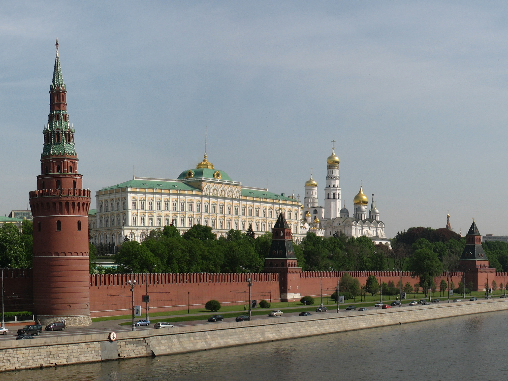
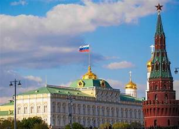
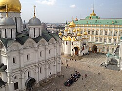
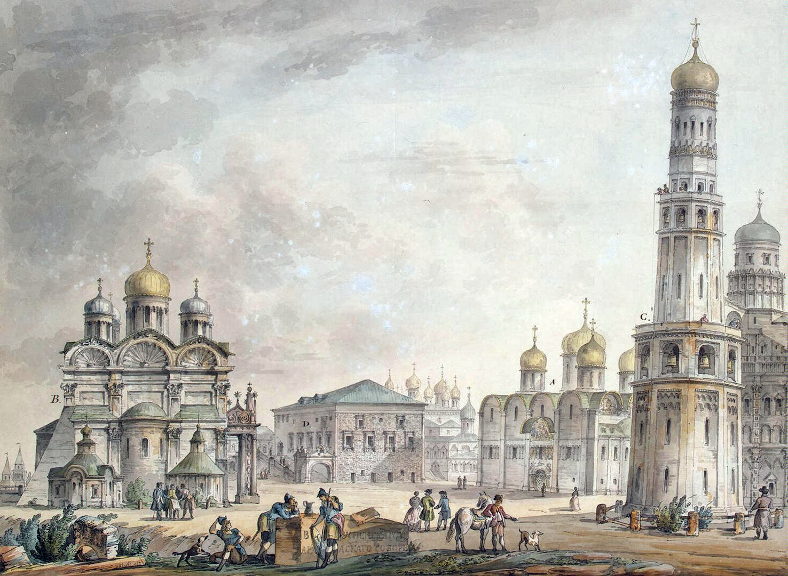
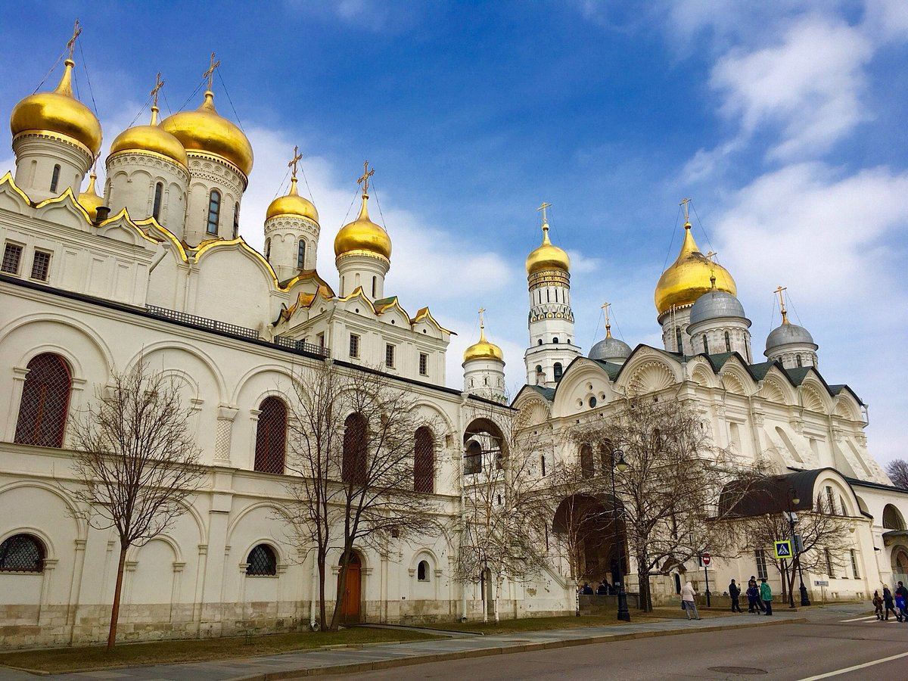

The Moscow Kremlin is a fortified architectural complex in the heart of Moscow, Russia, overlooking the Moskva River. It serves as the official residence of the President of Russia and has long symbolized the nation’s political, historical, and spiritual center. Its distinctive red brick walls and golden-domed cathedrals make it one of the world’s most iconic landmarks.
The Kremlin originated as a wooden fortress built by Prince Yuri Dolgoruky in the 12th century. Reconstructed multiple times—first in white stone under Dmitry Donskoy and later in red brick during the late 15th century under Ivan III—it became both a royal residence and a religious hub. Italian Renaissance architects introduced lasting features, such as the Assumption and Archangel Cathedrals, shaping the Kremlin’s enduring character.
The Kremlin forms a roughly triangular enclosure bordered by the Moskva River, Red Square, and the Alexander Garden (Moscow). Its 20 towers punctuate crenellated walls up to 19 meters high. Inside lie grand palaces, such as the Great Kremlin Palace and Armoury Chamber, and sacred sites clustered around Cathedral Square—including the Assumption, Annunciation, and Archangel Cathedrals—showcasing a blend of Byzantine, Russian, and Italian styles
From the 14th century onward, the Kremlin was the seat of Russian princes and tsars, later housing the Soviet government after 1918. Today it embodies Russian state authority while functioning as a major museum complex administered by the Moscow Kremlin Museums. Its artefacts, including regalia, icons, and treasures in the Armoury, trace the evolution of Russian power and artistry.
Designated a UNESCO World Heritage Site together with Red Square, the Kremlin is protected under Russian federal heritage law. Conservation programs maintain its authenticity despite past wars and reconstructions. As both a living seat of government and a premier cultural monument, it remains central to Moscow’s identity and Russia’s national narrative.


